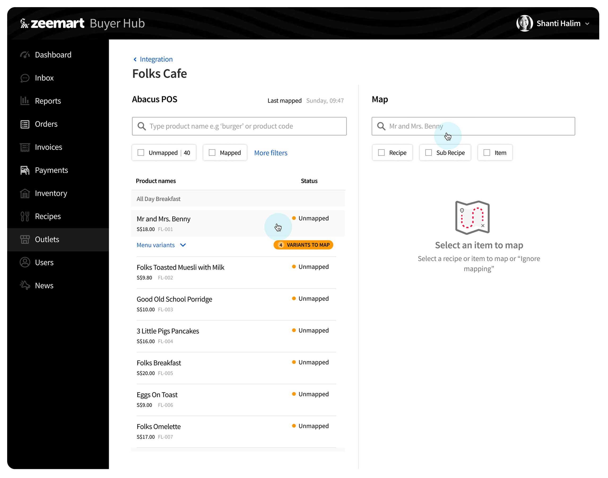
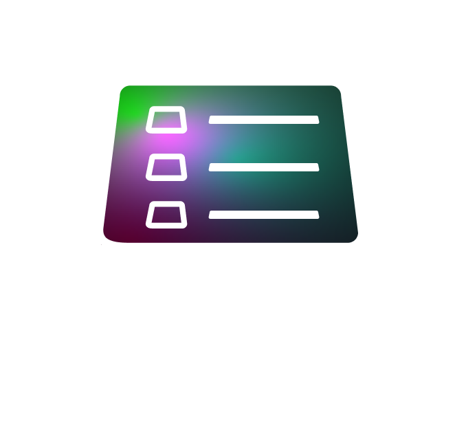
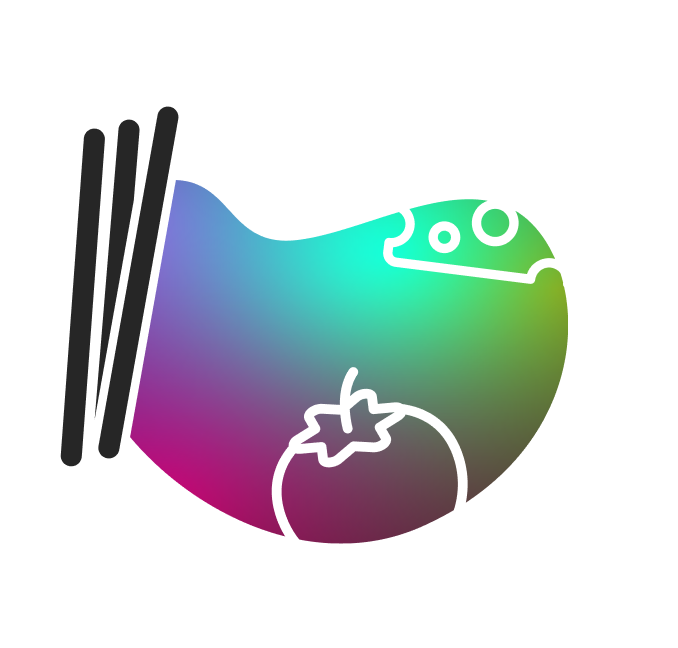
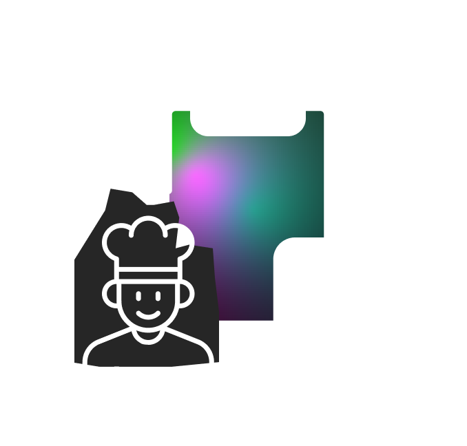
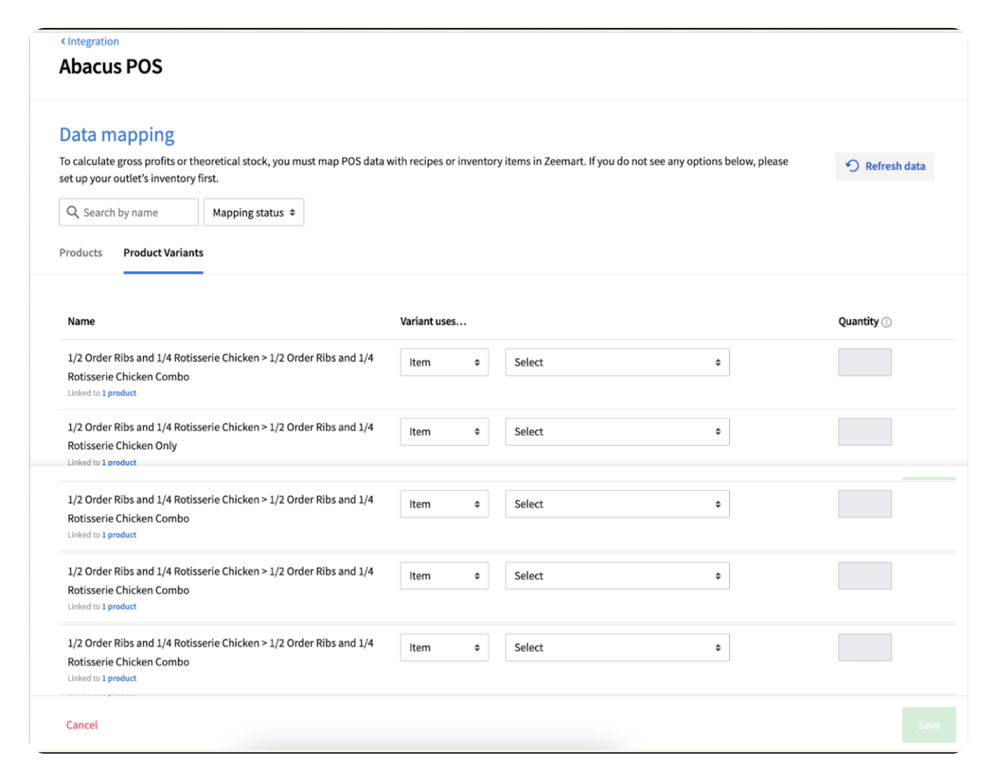
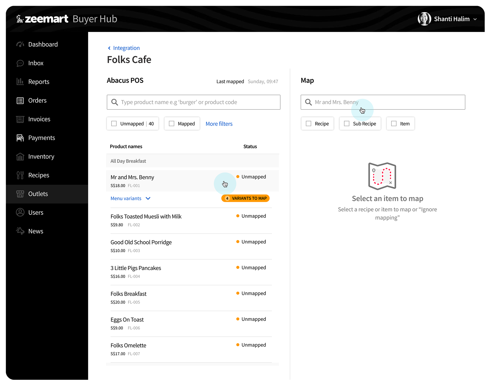
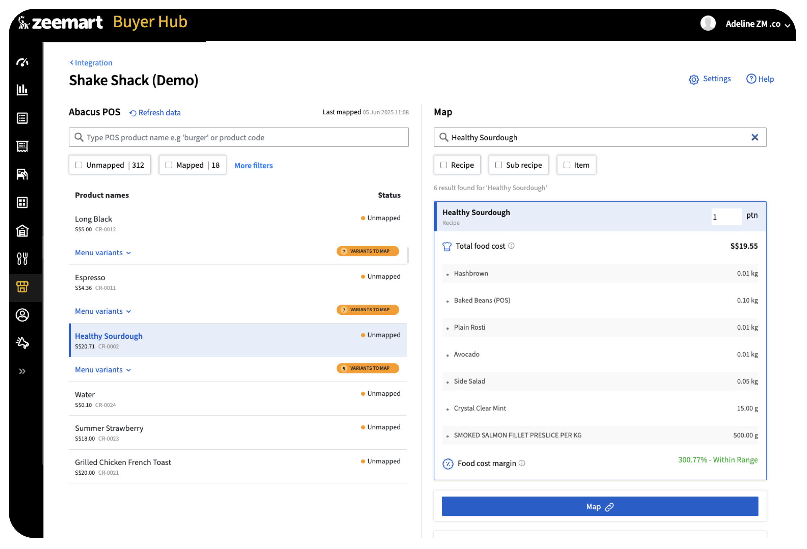
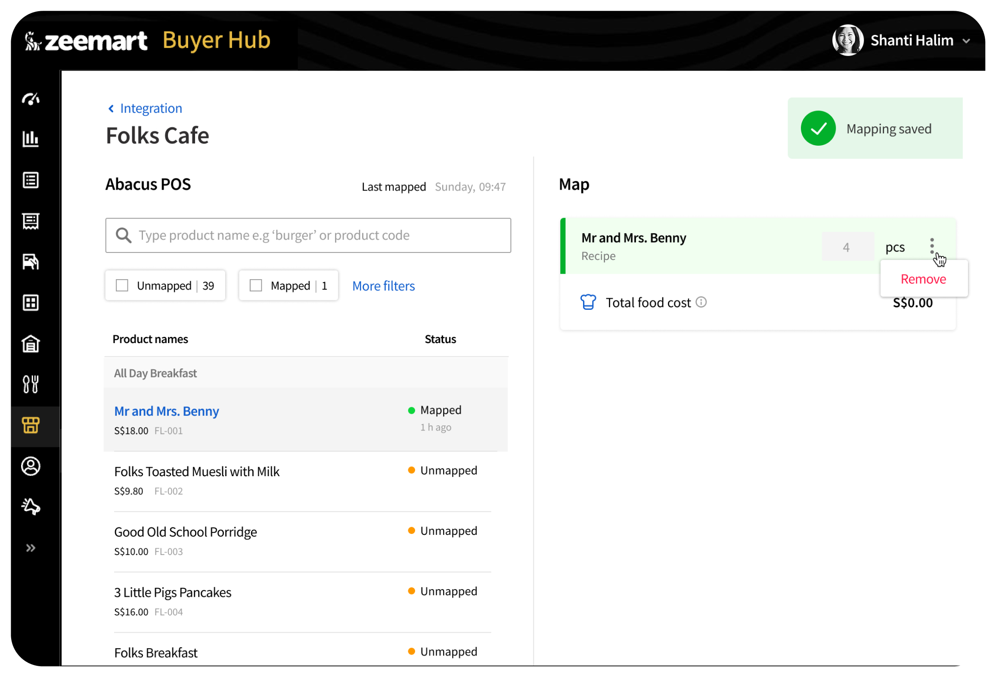
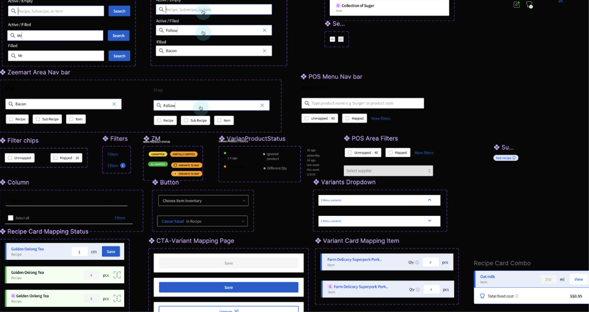

More work
Streamlining POS-to-inventory mapping for F&B businesses
How I redesigned the way restaurant menu items get matched to inventory recipes inside Zeemart's Buyer Hub, cutting down mapping errors and making onboarding new outlets faster.
I led and executed the end-to-end design process from ideation to production, in close collaboration with the team.

The split-view mapping screen, matching POS items to inventory recipes in real time.
This project is about designing a product-mapping experience between POS (Point of Sale) systems and Zeemart, an F&B inventory management platform.
For restaurants, optimizing POS mapping helps managers replenish stock more efficiently, minimizes gaps in inventory reporting, and reduces overall operational cost.
My role was working on the design as well as being the co-product manager, proposing the concept to my supervisor, with final approval from the Head of Product.
The old mapping process was difficult for users to work with, and the impact of a bad mapping wasn't obvious. Users, our internal onboarding team, hardly knew whether a mapping result was correct or would reduce inventory accurately.
Make the POS-to-inventory mapping process easy to understand, so it's clear how menu items link to one another. The end goals:

Input: Abacus POS Menu Sales data, POS items, quantity
The bridge: F&B Inventory & POS Central processing, linking menu items to specific recipe ingredients and measurements
Output: Accurate inventory & recipes Real-time stock counts, ingredient usage tracking, cost calculations, production planningThe primary challenge in this project came from the fact that the menu hierarchy built within the Abacus POS system was outside the control of the Inventory Management team. I also had limited context for imagining real-world usage, since I was designing for a product I'd never personally used.
To address this constraint, the design focus was placed on creating an experience that guides users through the mapping process. Dividing the layout into two distinct sections improves comprehension.

The before

The after
Users choose a menu item on the left. On the right, they select the item to map, a keyword search matches against the left-side name automatically, and relevant results start to appear.
Showing the total food cost helps confirm the selected item is the correct one, by letting users review its cost. A default food-cost margin helps validate the Menu Retail Price against the Total Food Cost.


This gives users, in this case restaurant staff, confidence that the item mapped is correct.
When designing a complicated flow like this, it would quickly get disorganized without a proper library of components.

Minimized error rates through real-time validation, reduced cognitive load with a two-panel layout that simplifies the relationship between menu items and recipe data, and bridged long-standing gaps in inventory reporting.
Designing for complex inventory systems taught me that clarity is the ultimate feature. By structuring the interface to mirror the user's mental model, we turned a technical hurdle into a seamless workflow.